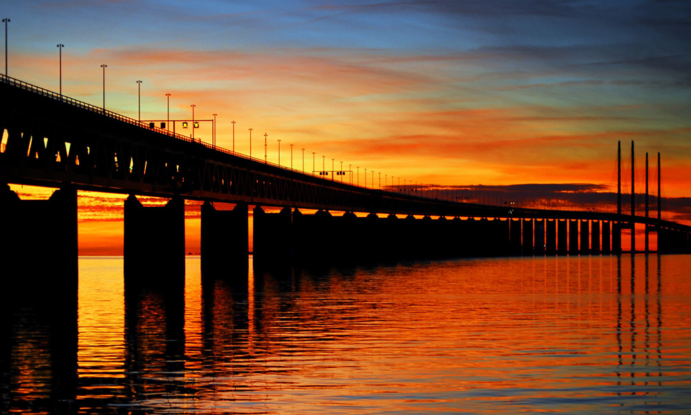

Thursday 12 November 2026, University of Copenhagen

Photo: Øresund Bridge, Malmö by Richard Dennis, CC BY 2.0.
ARCO (Algorithmic Research Cooperation around Øresund) is a recurring one-day meeting for researchers working on algorithms in the Øresund region. It takes place once or twice a year and moves between universities in the region. This year it is hosted at the University of Copenhagen. Everyone interested in algorithms is welcome, including students.
Registration is done through this form. If you would like to give a talk, you can indicate this in the same form. Details on the talk format will follow.
Nørre Campus, University of Copenhagen (around Universitetsparken, 2100 København Ø). The exact building and room will be announced here.
The program will be announced closer to the date.